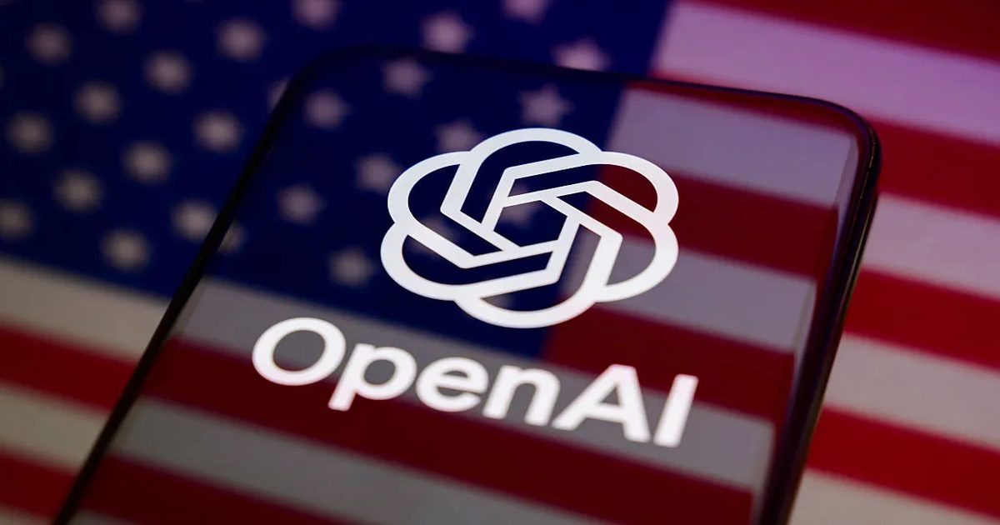

OpenAI уже пытается повлиять на выборы 2028 года
Крис Лехейн из OpenAI хочет, чтобы ИИ определил выборы 2028 года, предложив новый социальный контракт, который может принести пользу американцам, а также продвигать собственные бизнес-интересы ИИ-гиганта.